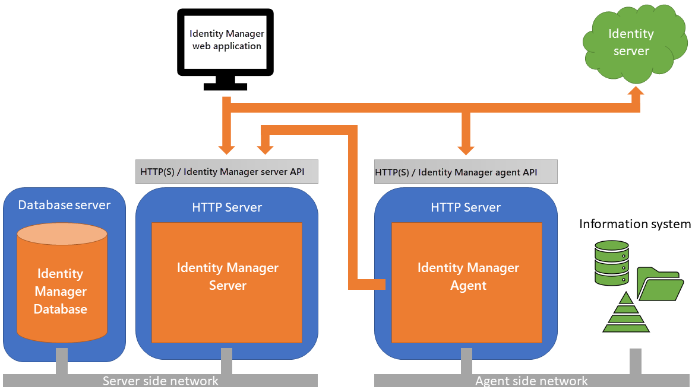

Architecture
This article dives deeper into Identity Manager's design principles. Security and flexibility are the main concerns of the architecture.
A Two-Tier Architecture
Identity Manager is made of two parts:
- The Identity Manager server operates the main process. It uses a dedicated database, serves the client side part of the web application and exposes its API.
- The Identity Manager agent operates data exchange with the information system. It implements a specific API called by the web client application.
Agent and server are ASP.Net applications running on Windows. Identity Manager's database is a Microsoft SQLServer relational database.

See the SaaS Environment topic for additional information on Netwrix Identity Manager (formerly Usercube) recommended architecture when working in a SaaS environment.
See the On-Premises Environment topic for additional information on Netwrix Identity Manager (formerly Usercube)' recommended architecture when working in an on-premises environment.
See how to Protect Agent/Server Communication .
Isolation Principle
Identity Manager server has no direct access to the information system of the organization. It can be installed on an isolated network (typically in the cloud). Only the agent can read or write the information system. All exchanges between agent and server are operated through the HTTP protocol (HTTPS recommended in production).
Unidirectional Command Flow
All reading or writing actions in the information system are initiated by the agent. Identity Manager server will never call the agent. The Agent periodically polls the server to gather the actions to process.
Tasks can run on the Server side or on the Agent side.
Tasks that run on the Server side are still executed by an Agent. This is the application of the one-way data flow principle. Agents can send commands to the Server to execute a Task through an HTTP request but the Server cannot command an Agent, hence isolating the sensitive Agents from the exposed Server.
As a result, each set of planned Tasks is assigned to a specific Agent, depending on the managed systems its Tasks relate to.
Agents also receive HTTP/HTTPS requests from the browser to allow authenticated end-users to launch jobs from the UI.
Authentication
Identity Manager can authenticate users within an Active Directory domain or using an OpenID identity server. For development mode, Identity Manager implements a form-based authentication using a unique password for all users See the End-User Authentication topic for additional information.
Multi-Agent Capability
Multiple agents can be installed. This allows Identity Manager to operate in a context where the information system is partitioned over several networks.